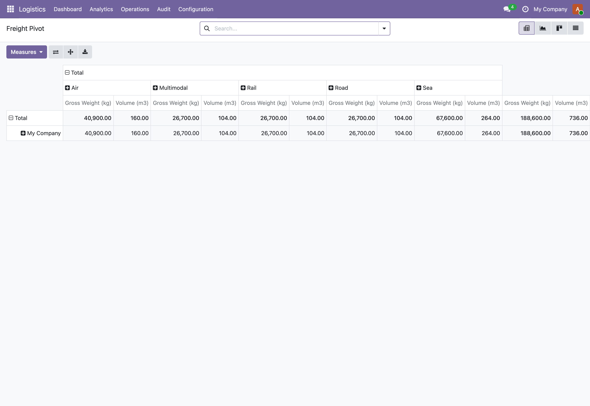

See it in action

One operational pane for the whole suiteLive KPI tiles for quotes and pipeline, freight in transit, open customs declarations, transport, last mile, cold chain and yard. Each tile drills straight into the underlying records, and tiles for modules that are not installed simply disappear.

Built-in pivots and graphsMode, lane and state pivots ship ready to slice the freight, quotation, customs and transport books without building a single report.